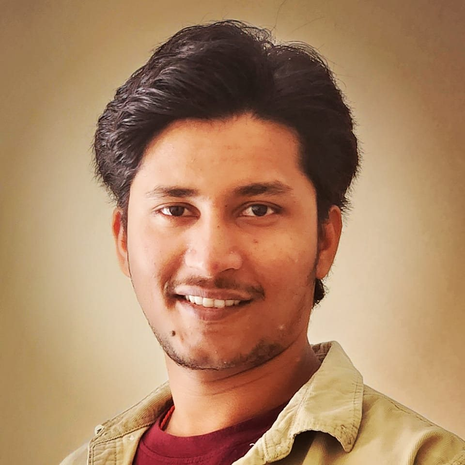
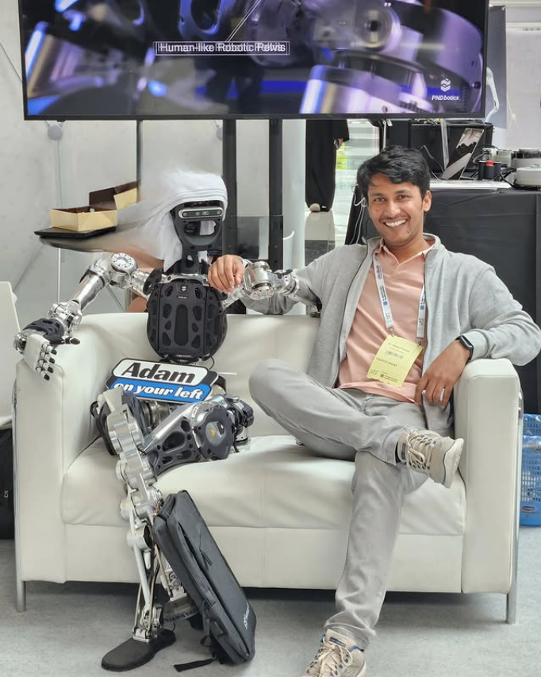
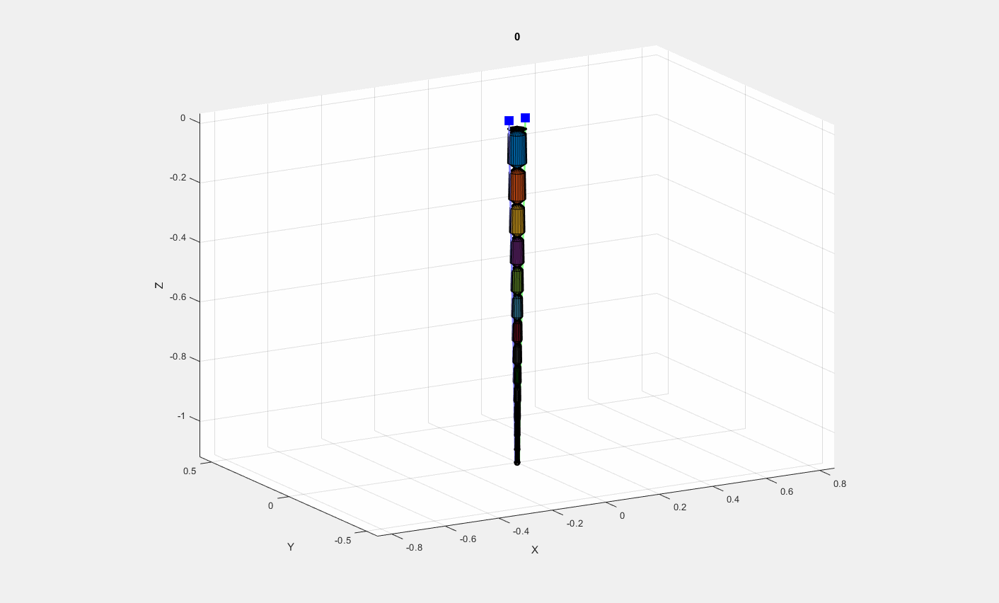
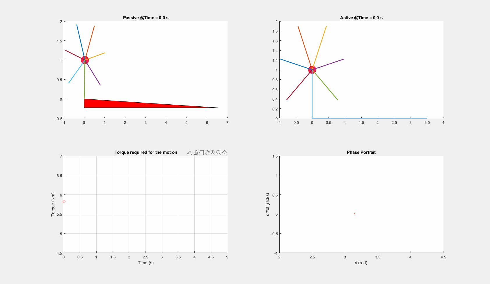

Human Motion Assistance
Cable-driven lower-limb rehabilitation exoskeletons, gait assistance, bi-planar cable routing, and controller comparison.

🚀 Currently seeking , Assistant Professor or Postdoctoral opportunities in Robotics, Rehabilitaion, Autonomous System. Contact Now →
I build models, controllers, and simulation frameworks for systems that move: cable-driven exoskeletons, six-wheel independent-drive vehicles, underwater hybrid manipulators, and elephant-trunk-inspired soft robots.

Robotic systems I have been working with.
Cable-driven lower-limb rehabilitation exoskeletons, gait assistance, bi-planar cable routing, and controller comparison.
Torque vectoring and hierarchical control allocation for six-wheel independent-drive unmanned ground vehicles.
Elephant-trunk-inspired hybrid manipulators for underwater operation with fast n-link analytical derivatives.
My work connects mechanical insight to real-time computation.
Postdoctoral Fellow at Khalifa University working across mechanical engineering, medical sciences, rehabilitation robotics, biofeedback, and underwater manipulation.
My current focus is a generalized framework for n-link serial chains with one to three rotational DOFs per joint, enabling fast analytical partial derivatives for real-time control of soft and hybrid robotic systems.
Dynamics MPC Cable Routing Soft Robotics UGV Control MATLAB/Simulink ADAMS Abaqus ROS

Real-time hierarchical control distribution under nonlinear constraints for a six-wheel independent-drive skid-steer unmanned ground vehicle.
UGV Torque Vectoring CAN-bus OpenECU


A generalized n-link serial-chain framework with fast analytical partial derivatives, developed toward underwater hybrid manipulation and soft robotic motion control.
Soft Robotics Underwater Analytical Partials n-link Dynamics


MATLAB simulation of hybrid passive walking dynamics, impact restitution, incline descent, and motion-energy visualization.
Hybrid Dynamics MATLAB Animation


A compact timeline of research movement.
Underwater hybrid manipulation, elephant-trunk-inspired soft robotic arms, and generalized n-link dynamics.
Biofeedback, non-invasive stress reduction, ECG, EEG, PPG, and heart-rate signal acquisition.
Lab instruction, mentoring, and student project support.
In-silico framework for cable-driven lower-limb rehabilitation exoskeletons.
Real-time torque vectoring control for off-road unmanned ground vehicles.
Design and development of Reaper — Mechanical Hasua.
Outputs across rehabilitation robotics, UGV control, biofeedback, and soft robotics.
Awards, committees, and academic service.
Currently active project.
Development of a high-performance Amphibious Robot designed for seamless transition between aquatic and terrestrial environments, focusing on bio-inspired locomotion and waterproofing.
Amphibious Robotics Bio-inspired Hardware Design
Design and control of a Hand Rehabilitation Robot utilizing soft pneumatic actuators. This research focuses on patient-adaptive control strategies for stroke recovery and motor function restoration.
Soft Robotics Rehabilitation Cable Driven Control
An integrated robotic system featuring Ground and Aerial combined capabilities. Research involves morphological intelligence and transition control to optimize energy efficiency across diverse terrains.
Hybrid Locomotion UAV/UGV Autonomous Systems
For collaborations in robotic dynamics, motion control, rehabilitation systems, and underwater soft manipulation.
Contact Details